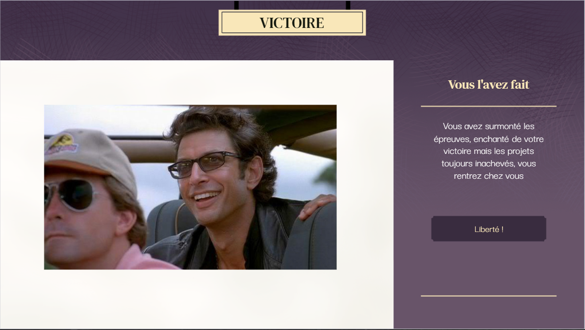

HOME
DESCRIPTION
COMPETENCES (MISE EN PLACE ET ACQUISE)
TF
DESCRIPTION
C'est un projet realisé sur Genially en 1ere année de BUT.
Le projet avait pour but de nous faire travailler la gestion d'un projet en groupe et donc travailler sur la gestion des équipes et l'organisation.
Le projet prend la forme d'un escape Game avec plusieurs fin, le thème est une notion d'informatique vu lors de la première année de BUT et était destiné pour les premières années pour les faire jouer sur leurs connaissances vu en cours.

CODE SOURCE PROJET
Trailer Vidéo du jeu
COMPETENCES MIS EN OEUVRES
COMPETENCES ACQUISES
Gestion d'équipe
Travail en équipe